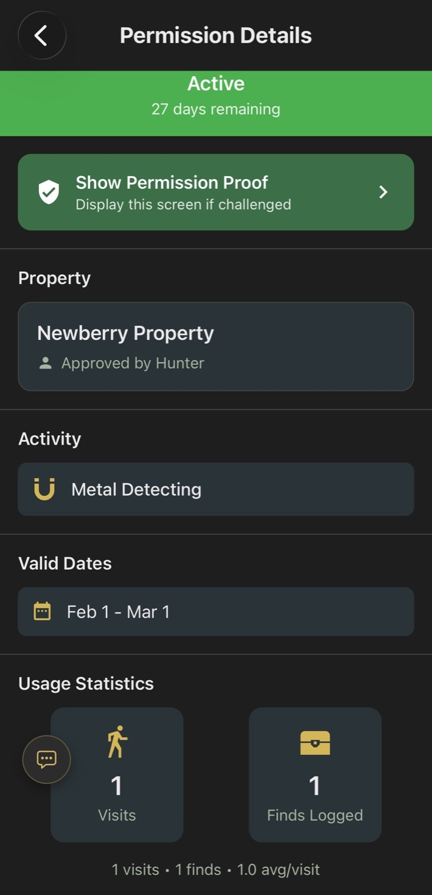

If you've ever found yourself slowing down in front of an old property, studying the shape of the land and wondering what might still be buried there, then you already know the real bottleneck in metal detecting usually is not skill. It is access. The best places to hunt are often on private land, and that means everything depends on one uncomfortable moment: asking a stranger for permission.
For a lot of detectorists, that moment is enough to stop the hunt before it even starts. Walking up to a door can feel intrusive. Catching a landowner at the wrong time can shut the conversation down before it begins. And even when someone says yes, the whole agreement is often loose and forgettable. Maybe it was a quick conversation in the driveway. Maybe it was a handshake and a "sure, go ahead sometime." That works until it doesn't. A neighbor asks questions, a family member doesn't know you were approved, or the landowner simply doesn't remember the details the next time you come back.
The bigger issue is that most permission is not actually structured. There is rarely a clear record of where you are allowed to detect, how long the permission lasts, whether certain areas are off-limits, or what happens if you want to return later. Everything depends on memory, and that leaves too much room for confusion.
A Better Way to Ask
That is where things start to change.
Instead of relying on timing, luck, and informal conversations, permission can be handled in a way that is clearer, more respectful, and easier for both sides. With Aureal's PermissionLink™, the detectorist creates a request inside the app that lays everything out up front. The property area can be outlined directly on a map, the dates can be defined, and a short message can explain exactly what the detectorist is hoping to do.
From there, the request can be shared in whatever way fits the situation. If you are standing there in person, you can simply show a QR code for the landowner to scan on the spot. If you are reaching out remotely, you can send the same request as a text message or email, giving them the chance to review it on their own time instead of feeling put on the spot.

What the Landowner Sees
When the landowner opens the link, they see a clear, simple page with the request details and the mapped area. They can approve or deny it with a tap, add any conditions they want, set restrictions, and decide whether they are open to being contacted again for future hunts. Once approved, the detectorist has a verified permission tied to that request, which can be referenced later if there are ever any questions about access.
After the Hunt
That alone makes the process smoother, but it also changes what happens after the hunt.
Instead of disappearing and leaving the landowner wondering what took place on their property, the detectorist has the option to send a simple summary at the end of the hunt. They can share selected finds, show where they searched, and give the landowner visibility into what was actually done. It turns what is usually a one-sided interaction into something transparent and respectful, which builds trust over time.
There is also a practical benefit while you are out in the field. If you come across something unsafe, like sharp metal, debris, or anything that could pose a risk, you can flag it directly in the app. That hazard is then shared with the landowner along with its location, so they are aware of potential issues on their property that they might not have known about otherwise.
Building Long-Term Access
Over time, this creates a completely different dynamic. Landowners are not just granting access, they are seeing responsible use of their land. And because they can opt in to future contact, you are not forced to start from zero every time you want to return. You can submit another request later, they can review and approve it remotely, and the relationship continues without needing another in-person ask.
In practice, this solves several problems at once. It removes the pressure of knocking on doors at the perfect time. It gives landowners clarity and control. It gives detectorists something concrete to rely on. And it makes repeat permissions realistic instead of uncertain.
Why It Matters
That matters because access is often the biggest barrier in metal detecting. Not because the land is unavailable, but because the process of getting permission feels inconsistent and uncomfortable. When that process becomes simple, clear, and respectful for both sides, more opportunities open up.
That is what PermissionLink really changes. It does not just help you ask for permission. It gives you a better way to build it, prove it, maintain it, and grow it over time. And when that part of detecting becomes easier, everything else starts to follow.
Ready to simplify your permission process?
PermissionLink is built into every version of Aureal. Download the app and send your first request today.
Download Aureal